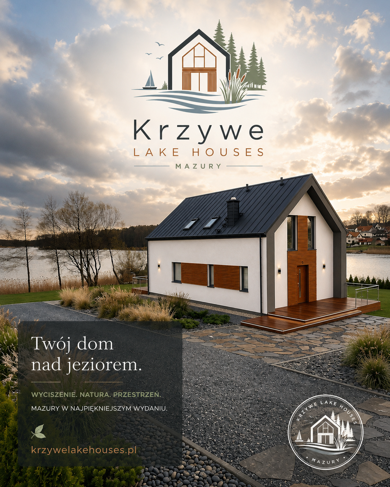

nowoczesne stodoły nad Jeziorem Krzywe

Krzywe Lake Houses · Mazury
Domy nad samym jeziorem dla 10 osób.
Nowoczesna stodoła, prywatna przestrzeń i spokojny mazurski rytm tuż przy linii wody.
10 osób
nad jeziorem
premium
01
Domy i galeria
Nowoczesna stodoła, przestrzeń dla 10 osób i kadry z miejsca.
02 Jezioro KrzyweWoda, cisza, naturalne brzegi i mazurski rytm wypoczynku.
03 DojazdMapa okolicy i szybka nawigacja prosto do punktu nad jeziorem.
04 OfertaTerminy, zasady pobytu i informacje potrzebne przed rezerwacją.
Pobyt nad samą wodą
Dwa domy stworzone z miłości do Mazur.
Krzywe Lake Houses powstały z prostego marzenia: zbudować nad Jeziorem Krzywe miejsce, do którego chce się wracać nie tylko latem. Miejsce dla ludzi, którzy kochają Mazury za ciszę po zachodzie słońca, zapach jeziora po deszczu, rozmowy przy ogniu i poranki, w których pierwszym widokiem jest woda.
To dwa domy na wynajem na Mazurach w stylu nowoczesnej stodoły. Każdy dom mieści do 10 osób, ma 4 sypialnie, salon z aneksem kuchennym, taras oraz bezpośredni dostęp do linii brzegowej. Do dyspozycji gości są także prywatny pomost i palenisko, czyli wszystko, co sprawia, że pobyt nad jeziorem staje się prawdziwym odpoczynkiem, a nie tylko noclegiem. To adres dla osób szukających domów nad jeziorem w okolicy Mrągowa, Mikołajek i Piecek, ale także takiej mazurskiej ciszy, której nie da się zaplanować w kalendarzu.
w każdym domu, wygodnie dla rodzin i grup
prywatna przestrzeń po wspólnym dniu
pomost, palenisko i jezioro tuż obok
Krzywe Lake Houses
domy nad jeziorem dla wspólnego czasu
Taras, salon z aneksem, prywatny pomost, palenisko i mazurska przestrzeń, która pozwala naprawdę zwolnić.
Mini galeria
Klimat pobytu, który budujemy nad Jeziorem Krzywe.


Nowoczesna stodoła
Prosta architektura, dużo powietrza i wygoda dla 10 osób.
Dom ma działać naturalnie: wspólna część dzienna, miejsce na spokojny sen, wygodne wyjście na zewnątrz i estetyka, która pasuje do jeziora zamiast z nim konkurować.
dla rodzin
dla grup
nad jeziorem
Dla kogo
Dom na Mazurach dla wspólnego czasu.
To dobry wybór na rodzinny wyjazd, spokojny weekend ze znajomymi, dłuższy pobyt wakacyjny albo pracę zdalną w miejscu, które pozwala naprawdę odpocząć po zamknięciu laptopa.
Wspólna przestrzeń, bliskość natury i spokojne tempo dnia.
Pobyt do 10 osób, wygodna baza i dużo miejsca na bycie razem.
Jasny horyzont, cisza i przestrzeń, która pomaga złapać oddech.
Rytm pobytu
Od kawy przy wodzie po spokojny wieczór.
Rano
Kawa, widok na jezioro i cisza zanim dzień nabierze tempa.
W dzień
Woda, okolica Mrągowa, Mikołajki, Piecki i wiele atrakcji na Mazurach.
Wieczorem
Taras, miękkie światło, rozmowy i horyzont bez miejskiego napięcia.
Dojazd nad jezioro
Nawiguj prosto do Krzywe Lake Houses.
Domy znajdują się nad Jeziorem Krzywe w gminie Mrągowo, blisko popularnych mazurskich miejsc: Mrągowa, Mikołajek i miejscowości Piecki. To wygodna baza dla osób szukających domu na wynajem nad jeziorem, spokojnej okolicy i dobrego dojazdu do wielu atrakcji na Mazurach.
- Okolica
- Mrągowo · Piecki · Mikołajki · Jezioro Krzywe

Domy i galeria
Nowoczesna stodoła dla 10 osób.
Tu pokażemy układ domu, pokoje, taras, strefę dzienną, zdjęcia wnętrz i kadry z otoczenia.

Jezioro Krzywe · Mazury prywatnie
Tu zaczyna się cisza.
Kilka minut po zjeździe z mrągowskiej drogi zostają tylko woda, trzciny i szeroki horyzont. Krzywe jest jeziorem, przy którym dzień zwalnia naturalnie: od pierwszej kawy na tarasie po wieczorne światło gasnące nad taflą.
gmina Mrągowo
ok. 150 ha
do 22,5 m
Najważniejsze o akwenie
Nie tylko widok z tarasu, ale prawdziwy krajobraz Mazur.
Krzywe jest kameralnym jeziorem rynnowym położonym przy miejscowościach Dłużec, Krzywe i Krzywy Róg. Brzegi są naturalne i zmienne: miejscami otwarte, miejscami trzcinowe, z trzema niewielkimi wyspami oraz łagodnym przejściem w pola i lasy. To krajobraz, który nie potrzebuje wielu słów: szeroka tafla, ptaki nad trzcinami i przestrzeń, która od pierwszego dnia obniża tempo.
Dużo przestrzeni na widok i oddech, ale nadal kameralny, mazurski charakter.
Średnia głębokość to ok. 5 m, a najgłębsze partie schodzą do 22,5 m.
Długa, nieregularna linia brzegu daje zatoki, cyple i dużo naturalnych kadrów.
Charakterystyczny, wydłużony układ akwenów rynnowych buduje poczucie głębi i kameralności.
Naturalna woda, trzcinowe brzegi i spokojne zatoki budują klimat miejsca.
Charakter jeziora
Urozmaicona linia brzegu, trzciny i cisza między polami.
Jezioro Krzywe nie jest miejskim kąpieliskiem z głośnym deptakiem. To bardziej naturalny akwen z zatokami, trzcinowiskami, mulistym i zmiennym dnem oraz spokojnym ruchem wody. Przy takiej scenerii najlepiej działają proste rzeczy: drewno pod stopami, otwarte okna, zapach jeziora po deszczu i wieczór, który można spędzić bez pośpiechu.
Rybostan
Dobre miejsce dla spokojnego wędkarstwa.
W wodach jeziora wymieniane są szczupaki, karasie, leszcze, węgorze i miętusy. To dobry kierunek dla osób, które lubią spokojne łowienie o świcie, bez miejskiego zgiełku i pośpiechu.
Ptaki i roślinność
Trzciny, wyspy i naturalne siedliska.
Wokół jeziora można spotkać ptaki związane z mokradłami i otwartą wodą: czaplę siwą, żurawia, kormorana czy jastrzębia. Przy brzegach pierwsze skrzypce grają pasy trzcin, zatoki i ciche przejścia między wodą, łąką i lasem.
- trzy niewielkie wyspy
- zatoki i półwyspy
- średnio zarośnięte brzegi
Wędkowanie
Łowisko z konkretnymi zasadami sezonowymi.
Sezon wędkarski ma tu swój wyraźny rytm: z brzegu od wiosny do późnej jesieni, z łodzi od początku czerwca, a zimą także pod lodem. Aktualne zasady i opłaty najlepiej sprawdzić przed wyjazdem u zarządcy łowiska.
- właściciel łowiska: Gospodarstwo Rybackie sp. z o.o. w Mrągowie
- połów nocny nie jest przewidziany w regulaminie łowiska
Dla gości
To jezioro jest osią całego pobytu.
Pobyt nad Krzywym układa się sam: rano kawa z widokiem na wodę, w dzień odpoczynek między tarasem a brzegiem, wieczorem cisza i światło odbijające się w tafli. To jest ten rodzaj Mazur, do którego wraca się w myślach długo po wyjeździe.
cisza
widok
natura


Położenie
Krzywe, Dłużec i Krzywy Róg przy jednym akwenie.
Akwen leży w gminie Mrągowo i od zachodu sąsiaduje z gminą Piecki. Dojazd z Mrągowa prowadzi lokalnymi drogami przez mazurskie pola i lasy, co od razu ustawia spokojniejszy rytm podróży.

Atrakcje w okolicy
Mazury blisko domu.
Miejsce na trasy spacerowe, żagle, rowery, restauracje, lokalne atrakcje i propozycje wyjazdów na każdą pogodę.
Oferta
Terminy, pakiety i zasady pobytu.
Zakładka pod cennik, dostępność, pakiety sezonowe, warunki rezerwacji i najważniejsze informacje przed przyjazdem.
Kontakt
Zapytaj o pobyt nad Jeziorem Krzywe.
Zakładka na formularz, telefon, Instagram, e-mail i krótką ścieżkę rezerwacji.